We introduce SemGeo-Gen, an unsupervised method for generating approximate cross-instance semantic-geometric supervision from weakly aligned 3D object collections. Our goal is not to recover exact point-level correspondences, which are often ambiguous across different instances and would require expensive, impractical manual supervision at scale. Instead, we automatically produce approximate correspondences that are semantically meaningful, geometrically consistent, and diverse enough to train modern correspondence models. Given only coarse category-level rotation alignment, SemGeo-Gen lifts multi-view DINOv2 features to 3D, aligns object instances using continuous piecewise-affine registration, and prunes candidate matches using semantic consistency. The resulting 3D correspondences can be projected into rendered views, yielding scalable 3D–3D, 3D–2D, and 2D–2D supervision without manual annotation. We validate the generated correspondences against sparse human annotations from KeypointNet, obtaining 93% PCK@0.10 and 97% PCK@0.15. More importantly, we show that using the generated correspondences for synthetic pretraining improves recent state-of-the-art semantic correspondence models on SPair-71k after fine-tuning on real data, with gains of up to 5 PCK@0.10 points. Together, these results indicate that approximate semantic-geometric supervision generated from 3D assets can improve real-image correspondence learning and serve as a scalable alternative to costly manual annotation.
Matches are established in 3D and projected into rendered views, giving 3D–3D, 3D–2D, and 2D–2D supervision.
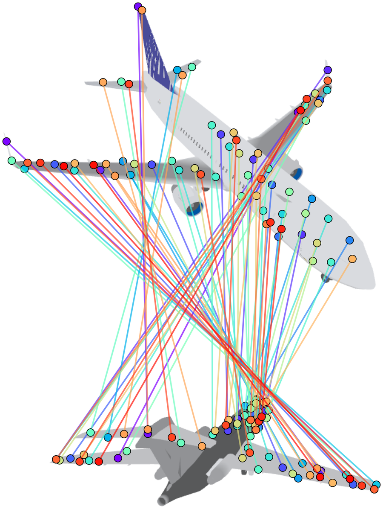
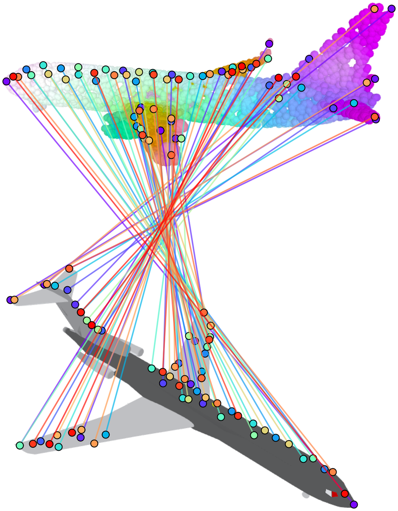
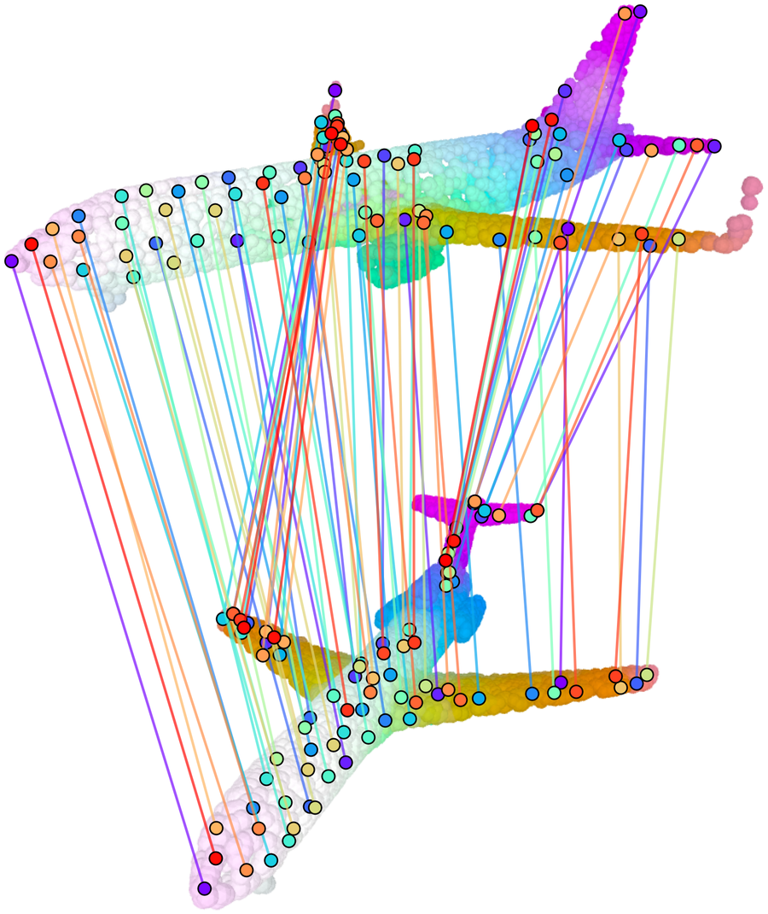
Approximate cross-instance correspondences between two airplane instances. Colors in 3D visualize the lifted DINOv2 features reduced to three dimensions.
Input: only rotation-aligned object pairs, with no point, part, or correspondence labels.
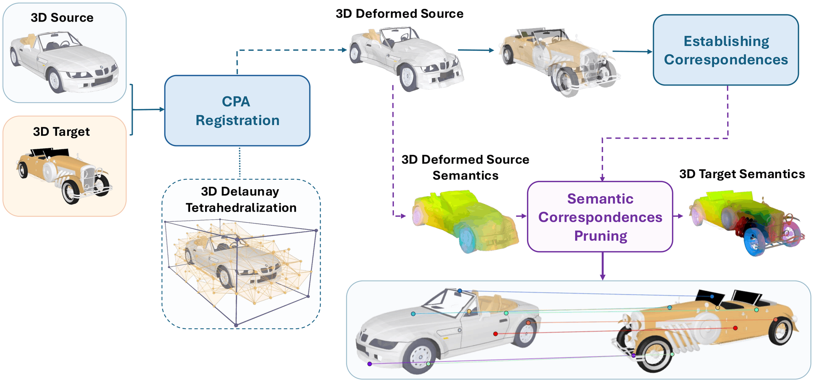
Each object is rendered from calibrated virtual cameras, dense DINOv2 features are extracted in image space and lifted back to the visible 3D points, and multi-view observations are aggregated into one descriptor per point. Semantic compatibility is the cosine similarity of the descriptors after a joint 64-D PCA:
\[ s_{\mathrm{sem}}(x_i,x_j)=\frac{z_i^\top z_j}{\|z_i\|_2\,\|z_j\|_2} > \tau_{\mathrm{sem}}, \qquad \tau_{\mathrm{sem}}=0.85. \]A pair is kept only if, in both directions, a large enough fraction of points has a semantically compatible point in the other object:
\[ \rho_{\mathrm{sem}}(\mathcal{S}\!\rightarrow\!\mathcal{T})=\frac{1}{|\mathcal{X}_S|}\sum_{x_i^S\in\mathcal{X}_S}\mathbf{1}\Big[\max_{x_j^T\in\mathcal{X}_T} s_{\mathrm{sem}}(x_i^S,x_j^T)>\tau_{\mathrm{sem}}\Big] \;\ge\; \gamma=0.6 . \]The source is deformed onto the target by a control grid over the normalized 3D domain, decomposed into tetrahedra by Delaunay triangulation. Each vertex has a learnable displacement \(u_v\), and points move by barycentric interpolation, so the deformation is affine inside each tetrahedron and continuous across cells. It is fit by gradient descent on a Chamfer loss with smoothness regularization:
\[ \min_{T_{\mathrm{CPA}}}\; \mathcal{L}_{\mathrm{Chamfer}}\big(T_{\mathrm{CPA}}(\mathcal{X}_S),\mathcal{X}_T\big) + \lambda_{\mathrm{smooth}}\,\frac{1}{|\mathcal{E}|}\sum_{(v_a,v_b)\in\mathcal{E}}\|u_{v_a}-u_{v_b}\|_2^2, \qquad \lambda_{\mathrm{smooth}}=0.3, \] \[ \mathcal{L}_{\mathrm{Chamfer}}(\widehat{\mathcal{X}}_S,\mathcal{X}_T)=\frac{1}{|\widehat{\mathcal{X}}_S|}\sum_{\hat{x}\in\widehat{\mathcal{X}}_S}\min_{x\in\mathcal{X}_T}\|\hat{x}-x\|_2^2+\frac{1}{|\mathcal{X}_T|}\sum_{x\in\mathcal{X}_T}\min_{\hat{x}\in\widehat{\mathcal{X}}_S}\|x-\hat{x}\|_2^2, \]where \(\mathcal{E}\) are the edges between neighboring vertices of the tetrahedral control grid.
Each deformed source point \(\hat{x}_i^S=T_{\mathrm{CPA}}(x_i^S)\) is assigned its nearest target point. The stored match links the original source point to that target point, and is kept only if it is also semantically compatible:
\[ a(i)=\arg\min_{j}\big\|\hat{x}_i^S-x_j^T\big\|_2, \qquad \mathcal{C}_{\mathcal{S},\mathcal{T}}=\Big\{\big(x_i^S,x_{a(i)}^T\big)\;:\;s_{\mathrm{sem}}\big(x_i^S,x_{a(i)}^T\big)>\tau_{\mathrm{sem}}\Big\}. \]Rendering with calibrated cameras \(\pi_{c_S},\pi_{c_T}\) turns each 3D match into 3D–2D (one endpoint projected) or 2D–2D (both projected) supervision:
\[ \big(u_i^S,u_j^T\big)=\big(\pi_{c_S}(x_i^S),\,\pi_{c_T}(x_j^T)\big). \]A category with \(N\) objects yields up to \(\binom{N}{2}\) cross-instance pairs, and each pair can be rendered from many views.
Pretrain on 12K generated 2D pairs per category from Objaverse-OA, then fine-tune on real SPair-71k. No architectural changes.
| Method | Training regime | aero | bike | boat | bus | car | chair | mbike | train | tv | Mean |
|---|---|---|---|---|---|---|---|---|---|---|---|
| Unsupervised / weakly supervised methods | |||||||||||
| SD | SPair-71k | 62.8 | 52.7 | 31.2 | 39.1 | 35.6 | 32.0 | 51.0 | 61.8 | 52.9 | 46.57 |
| DINOv2 | SPair-71k | 73.4 | 60.2 | 43.2 | 46.7 | 45.1 | 33.4 | 60.7 | 54.2 | 23.9 | 48.98 |
| DINOv2+SD | SPair-71k | 73.8 | 61.0 | 40.2 | 47.4 | 44.1 | 41.5 | 61.7 | 63.5 | 52.4 | 53.96 |
| SphericalMaps | SPair-71k | 76.2 | 60.1 | 46.5 | 74.9 | 68.0 | 45.1 | 69.1 | 73.9 | 58.1 | 63.54 |
| Supervised methods | |||||||||||
| SCorrSan | SPair-71k | 57.1 | 40.3 | 38.1 | 57.8 | 47.1 | 25.2 | 45.3 | 77.7 | 69.7 | 50.92 |
| CATS++ | SPair-71k | 60.6 | 46.9 | 41.6 | 64.9 | 50.4 | 29.2 | 50.9 | 80.9 | 74.9 | 55.59 |
| DHF | SPair-71k | 74.0 | 61.0 | 40.7 | 70.0 | 74.4 | 38.5 | 66.6 | 87.4 | 60.3 | 63.66 |
| DINO+SD (S) | SPair-71k | 84.7 | 67.5 | 64.5 | 85.7 | 82.0 | 57.0 | 75.9 | 93.6 | 70.5 | 75.71 |
| Jamais Vu | SPair-71k | 83.6 | 70.1 | 64.1 | 91.4 | 83.2 | 61.4 | 78.4 | 95.5 | 80.1 | 78.80 |
| Recent supervised state-of-the-art methods under different supervision settings | |||||||||||
| GeoAware-SC | SPair-71k | 83.42 | 71.07 | 66.68 | 90.93 | 86.10 | 62.18 | 79.54 | 95.33 | 79.00 | 79.36 |
| SPair-71k + Ours | 86.28 | 74.60 | 68.33 | 93.12 | 84.73 | 68.94 | 79.73 | 95.31 | 80.73 | 81.31 | |
| Ours P.T. → SPair-71k | 89.38 | 76.11 | 71.15 | 93.80 | 86.74 | 73.80 | 82.33 | 95.67 | 84.59 | 83.73 | |
| MARCO | SPair-71k | 92.16 | 76.76 | 76.53 | 93.17 | 88.57 | 82.49 | 82.03 | 93.62 | 91.72 | 86.39 |
| SPair-71k + Ours | 92.26 | 77.49 | 73.74 | 92.59 | 84.86 | 82.71 | 79.78 | 93.22 | 89.72 | 85.23 | |
| Ours P.T. → SPair-71k | 95.59 | 80.66 | 79.35 | 94.59 | 91.89 | 91.16 | 82.30 | 94.69 | 93.49 | 89.28 | |
Category-wise PCK@0.10 ↑ on Rigid-9: the rigid SPair-71k categories with well-defined semantic-geometric structure (excluding the rotationally symmetric bottle and potted plant). P.T. = pretraining.
| Method | Training | Rigid-9 | Non-rigid-7 | Symmetric-2 | All-18 |
|---|---|---|---|---|---|
| GeoAware-SC | SPair-71k | 80.48 | 86.94 | 72.35 | 82.09 |
| DenseMatcher P.T. | 80.37 | 86.54 | 71.97 | 81.83 | |
| Ours P.T. | 84.20 +3.72 | 88.23 +1.29 | 72.58 +0.23 | 84.48 +2.39 | |
| MARCO | SPair-71k | 87.32 | 90.79 | 74.99 | 87.30 |
| Ours P.T. | 89.61 +2.29 | 92.06 +1.27 | 75.38 +0.39 | 88.98 +1.68 |
Pretraining on synthetic rigid categories, then fine-tuning on all 18 SPair-71k categories. PCK@0.10 ↑.
| Pretraining labels | Rigid-9 mean |
|---|---|
| None (SPair-71k only) | 79.36 |
| DenseMatcher | 80.13 +0.77 |
| SemGeo-Gen (ours) | 83.73 +4.37 |
GeoAware-SC, same data-generation and pretrain-then-fine-tune protocol. PCK@0.10 ↑.
Each image shows a source–target pair with predicted correspondences. Green: correct; red: incorrect.
Geometry alone matches nearby regions even when they have no semantic counterpart; lifted DINOv2 features remove those matches.
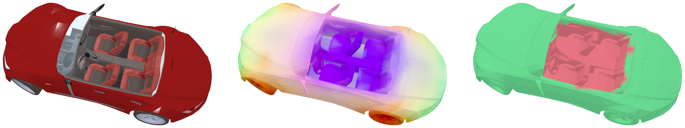
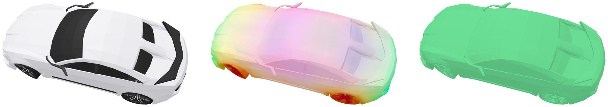
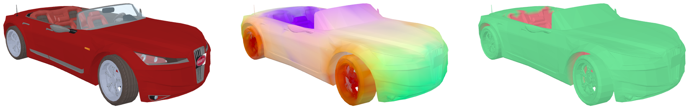
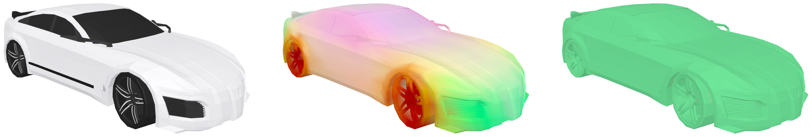
Green points have at least one point in the paired object with cosine similarity above 0.85; red points have none (e.g., the exposed seats) and receive no correspondences.
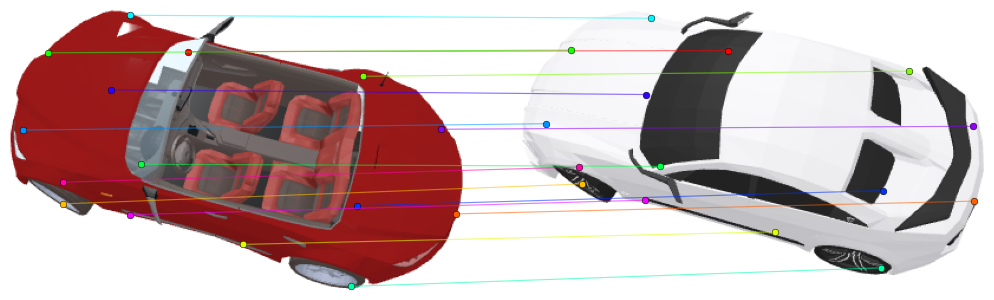
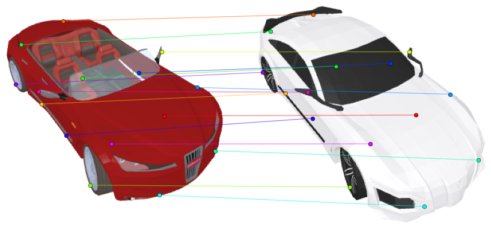
Sampled correspondences after semantic pruning, from two views of the same pair. The exposed seats and steering wheel, and the roof of the white car, receive no correspondences even though registration deforms them toward other parts.
Generated 3D correspondences vs. human-annotated KeypointNet keypoints, used for evaluation only. Three subsets of 100 models per category.
| Category | @0.05 | @0.10 | @0.15 | @0.20 |
|---|---|---|---|---|
| Airplane | 0.79 | 0.94 | 0.98 | 0.99 |
| Bathtub | 0.70 | 0.88 | 0.96 | 0.99 |
| Bed | 0.68 | 0.91 | 0.96 | 0.99 |
| Bottle | 0.83 | 0.96 | 0.98 | 0.99 |
| Cap | 0.80 | 0.97 | 1.00 | 1.00 |
| Car | 0.78 | 0.95 | 0.99 | 1.00 |
| Chair | 0.77 | 0.96 | 0.99 | 0.99 |
| Guitar | 0.81 | 0.96 | 0.98 | 0.99 |
| Helmet | 0.55 | 0.84 | 0.94 | 0.98 |
| Category | @0.05 | @0.10 | @0.15 | @0.20 |
|---|---|---|---|---|
| Knife | 0.83 | 0.93 | 0.96 | 0.98 |
| Laptop | 0.89 | 0.99 | 1.00 | 1.00 |
| Motorcycle | 0.75 | 0.93 | 0.98 | 0.99 |
| Mug | 0.73 | 0.96 | 0.99 | 1.00 |
| Skateboard | 0.86 | 0.97 | 0.99 | 1.00 |
| Table | 0.76 | 0.96 | 0.99 | 1.00 |
| Vessel | 0.45 | 0.71 | 0.87 | 0.94 |
| Mean | 0.75 | 0.93 | 0.97 | 0.99 |
| Median | 0.78 | 0.96 | 0.98 | 0.99 |
PCK at thresholds 0.05–0.20 of the target bounding-box diagonal ↑.
| Method | @0.05 | @0.10 | @0.15 | @0.20 |
|---|---|---|---|---|
| Back to 3D (1-shot) | 0.438 | 0.632 | 0.725 | 0.777 |
| Back to 3D (3-shot) | 0.436 | 0.641 | 0.740 | 0.799 |
| SemGeo-Gen (zero-shot) | 0.648 | 0.865 | 0.945 | 0.977 |
Mean PCK on a subset of 100 source–target pairs per category (1,600 pairs).
| Setting | @0.05 | @0.10 | @0.15 | @0.20 |
|---|---|---|---|---|
| Registration only (no filtering) | 0.62 | 0.84 | 0.93 | 0.97 |
| + correspondence pruning | 0.73 | 0.91 | 0.97 | 0.99 |
| + pair filtering (full) | 0.75 | 0.93 | 0.97 | 0.99 |
Mean PCK on KeypointNet. Pair-level numbers are computed on the retained pairs.
| Model | DOF | Time (s/pair) | @0.01 | @0.05 | @0.10 | @0.15 | @0.20 |
|---|---|---|---|---|---|---|---|
| Affine | 12 | 1.15 | 0.221 | 0.686 | 0.898 | 0.960 | 0.982 |
| TPS (K=216) | 660 | 3.71 | 0.226 | 0.739 | 0.919 | 0.966 | 0.983 |
| CPA (ours) | 648 | 1.13 | 0.236 | 0.729 | 0.922 | 0.971 | 0.986 |
Mean PCK across the 16 KeypointNet categories; registration time on a single A6000 GPU. CPA matches TPS accuracy while running about 3× faster.
Correspondences on Objaverse-OA categories not covered by SPair-71k, KeypointNet, or AP-10K.
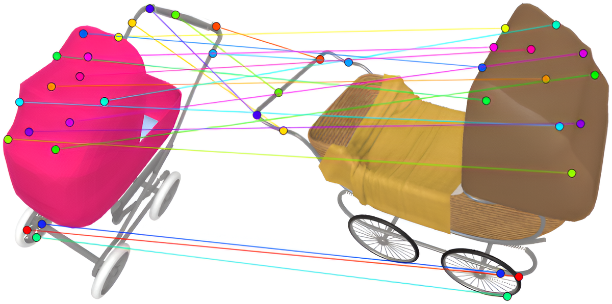
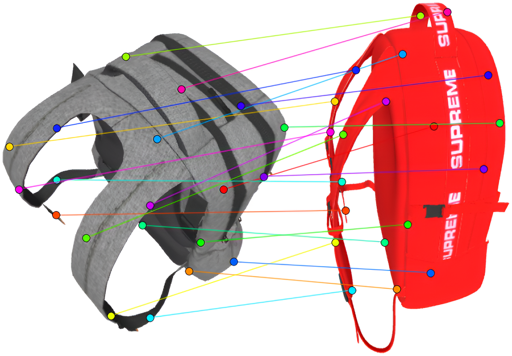
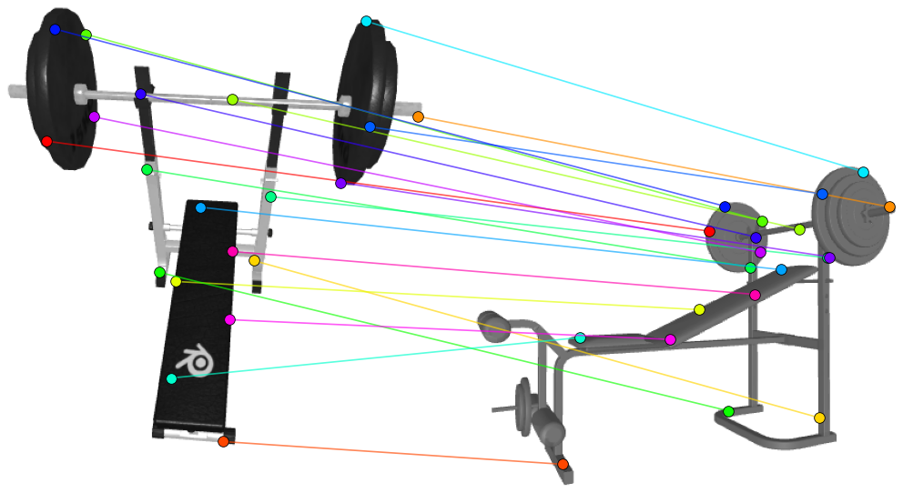
If you find this work useful, please cite:
@inproceedings{Amoyal:NeurIPS:2026:SemGeoGen,
title={{SemGeo-Gen: Unsupervised Generation of Approximate Cross-Instance Semantic-Geometric Correspondences}},
author={Amoyal, Roy and Ifergane, Shira and Freifeld, Oren},
year={2026},
booktitle={NeurIPS},
}